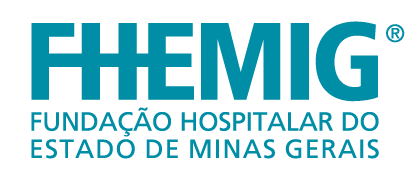
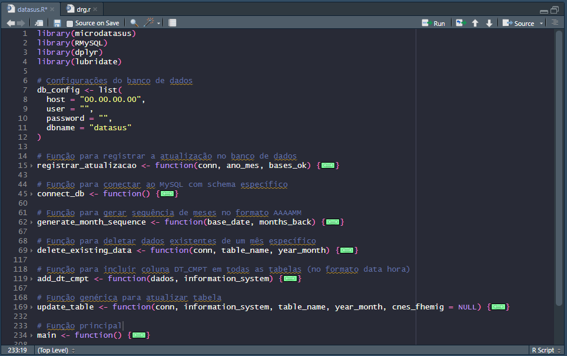
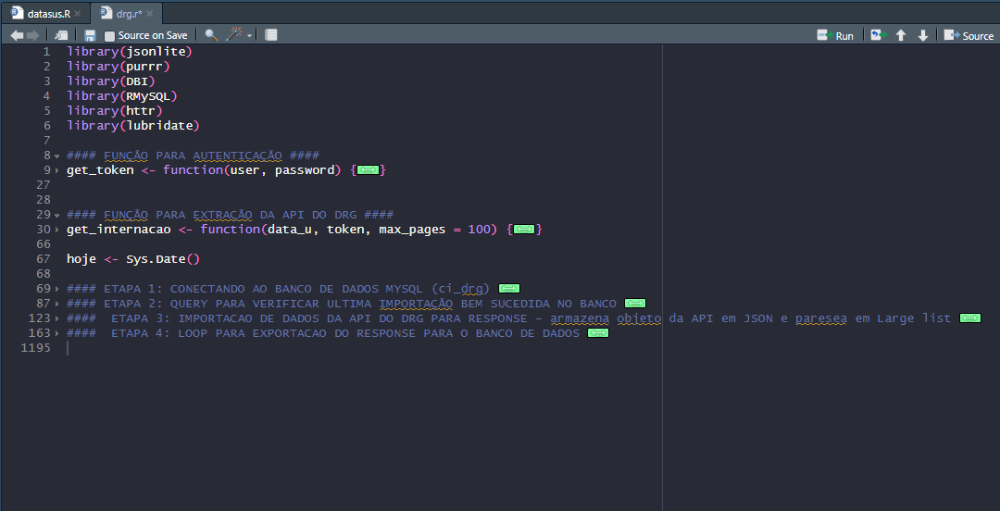

Rede Automatiza MG · CINFORede Automatiza MG
Automação do Monitoramento de Indicadores Contratuais
Ana Clara Mendes Rezende · Coordenadora de Informação · FHEMIG
Quem Apresenta
Coordenadora de Informação na FHEMIG.
Mestranda em Filosofia da Física na UFMG.
Arquitetura, Análise e Governança de Dados.
Business Intelligence e Apoio Decisório Estratégico.
Integração de Sistemas Complexos: Tasy, SIGH, DataSUS e DRG.
Core Tech Stack
Estrutura Governamental
Vinculada diretamente à Administração Central. Convertendo dados operacionais brutos em inteligência corporativa para tomada de decisão.
Consolidação unificada de sistemas assistenciais e administrativos em bases analíticas de alto desempenho.
Desenvolvimento de métricas institucionais precisas e painéis dinâmicos para auditoria e gestão preditiva.
Padronização de regras de negócio e governança voltada para transparência ativa.
Inovação e Modernização
Implementação de uma camada única integrada sobre Microsoft Fabric. Nossos dataflows corporativos e modelos semânticos unificados garantem a perfeita transição histórica e integridade contínua do SIGH para o Tasy.
Pilares Fundamentais do Projeto
Seção 01
Desafio Operacional
Todos os dados dependem de um processo rigoroso cuja metodologia se extende por quase 200 páginas em PDF.
Complexidade Documentada
Indicador 1.1.5 (Cumprimento da Produção de Diárias de UTI/UCI neonatal)
Indicador 1.2 (Índice de Contas Faturadas em até 1 mês após a alta)
Indicador 2.3 (Percentual de codificação DRG de alta)
Localizar e extrair manualmente os arquivos estruturados em formato .dbc diretamente no site do DataSUS.
Descompactar e importar para o sistema TABWIN.
Executar tabulações internas complexas, aplicar os filtros de unidade e realizar a extração para formato plano CSV.
Construir fórmulas extensas de PROCV, cruzamento manuais de planilhas e digitação direta de dados mensais.
Localizar e extrair manualmente os arquivos estruturados em formato .dbc diretamente no FTP do DataSUS.
Descompactar e converter a estrutura para .dbf visando a leitura legível dentro do sistema TABWIN do governo.
Acessar telas específicas, aplicar os filtros de unidade, printar para registro histórico e copiar números para Excel.
Construir fórmulas extensas de PROCV, cruzamento manuais de planilhas e digitação direta de dados mensais.
Riscos e Esforço Operacional
Gerenciamento complexo de credenciais em múltiplos portais e sistemas internos e externos.
Exigência de treinamento específico para compreender cada fonte de extração dados.
Falta de padronização, risco drástico de erros manuais de digitação e ausência total de linhagem e trilha de auditoria.
Seção 02
Tecnologia Analítica Líder
Desenvolvida especificamente para computação estatística avançada, R destaca-se como uma das ferramentas mais eficientes do mercado global para orquestração de dados, conexões complexas de APIs e automação de rotinas de ETL.
Por que esta arquitetura foi escolhida?
Pipeline de Dados mensal · Script DataSUS

Pipeline de Dados diário · Script DRG

Linhagem de Dados Corporativa
R orquestra, extrai e limpa dados do DataSUS e DRG diretamente para as tabelas dos bancos analíticos dedicados.
DataFlows no Microsoft Fabric consolidam dados do DataSUS e DRG + SIGH/Tasy histórico, Forms operacionais e SharePoint corporativo.
Agrupamento técnico em um Dataset único centralizado no Power BI. Regras de negócio uniformizadas conforme manual de indicadores.
Dashboard executivo final atualizado diariamente, pronto para consumo imediato da Fhemig, da contratada e dos órgãos de controle e auditoria.
Entrega de Valor
Acompanhamento centralizado e unificado por competência e período de avaliação contratual. O algoritmo de cálculo exato de cada métrica abre de forma transparente através de botões nativos de informação.
Seção 03
Métricas de Sucesso Institucional
Visão de Futuro
A engenharia de dados avançada e automação anulam falhas operacionais e tornam as entregas ágeis e escaláveis.
Viabilidade técnica e baixo custo de implementação de ETL moderno, mesmo em equipes enxutas.
A inteligência analítica traz visibilidade crucial a dados governamentais ricos que antes ficavam ocultos.
Diretrizes para Implementação
Mapeie e priorize processos manuais exaustivos
Automatize o pipeline em blocos modulares
Aproveite bibliotecas maduras e validadas
Documente rigidamente o dicionário de regras
Estruture pensando em governança analítica
A engenharia de dados automatizada transforma processos governamentais críticos em fluxos ágeis, seguros e altamente escaláveis.
Mais do que tecnologia: uma profunda evolução cultural orientada por dados.
Ana Clara Mendes Rezende · Coordenadora de Informação · FHEMIG